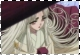
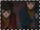

I n f o r m a t i o n /basics.html
Hinoto is quite an important character in X. One may not realize how significant Hinoto's role is in the outcome of the series. Yes, she is the Yume-mi, or the Dreamgazer, for the Dragons of Heaven. She has the ability to see into the future, and she aids the Dragons of Heaven by predicting where and when the Dragons of Earth are going to show. However, she isn't simply what she seems, both externally and internally.
Externally, although she is seemingly small and fragile, with a body of a child, she is very powerful in telepathy and mastering spells. Hinoto's body is completely paralyzed, she cannot see, speak, hear or walk, and she communicates using telepathy only. She is able to see into the future and therefore knows what's going to happen. The politicians often come to her for help, as she can tell them the future. She knew that Kotori was destined to die, and she knew that one of the Holy Sword would be stolen. She sees the future in her dreams, and in one of her dreams, she saw the destruction of the world. She wishes for Kamui to become one of the Seven Seals and save the world. However, as a Dreamgazer, she can only see the future, she cannot do anything about them. Even if she hopes and prays, her predictions are always right, whether good or bad.
Internally, she possesses a cursed spirit, one who can strongly influence her, and create dark wishes, wishes that favor the Dragons of Earth. This spirit is a mirror image of Hinoto, but you don't see it until the latter episodes. In the beginning, there were shiki (charms) that formed into black crows (messengers) or men in black suits, attacking various Dragons of Heaven. These shiki were sent by Hinoto, as revealed later. More about her dark side can be learned in the other sections of this site. But as viewers can see, Hinoto becomes an unpredictable character.
Hinoto has two followers who serve her, Hien and Sohi. They are created by Hinoto, formed from her charms/tailsman and assuming human forms. Their job is to aid her and protect her. Hinoto lives in the basement of the National Assembly building, and she knows Kamui better than he knows himself. It was Hinoto who told Kamui about himself and how he must choose his own future, and the future of the world. Everyone has a true wish in the X series. Subaru's true wish was to have Seishirou kill him, Sorata and Arashi's true wishes are to protect one another, and Hinoto's true wish? She seemed like she wanted to preserve the Earth and protect it, but does she have another motive...?
x
clear x